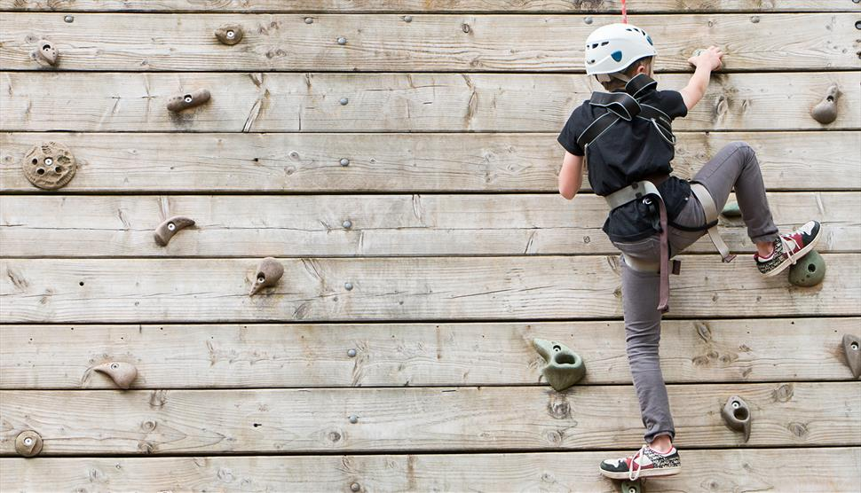

Lochquarry Outdoor Centre is set in acres of land in the heart of the majestic Argyll hills. On our doorstep is not only magnificent scenery, but also a breath-taking selection of outdoor and adventurous activities. With activities designed to meet the needs of all ages and experiences of young people, Lochquarry truly brings adventure to everyone. Each activity is run under the instruction of one of our highly trained staff and all safety equipment is provided.
"We had a great time and loved all the different activities that we did" − 8th Gourock Guides.
Interested in exploring more about outdoor adventures in Scotland? Check out the Visit Scotland website for more information.